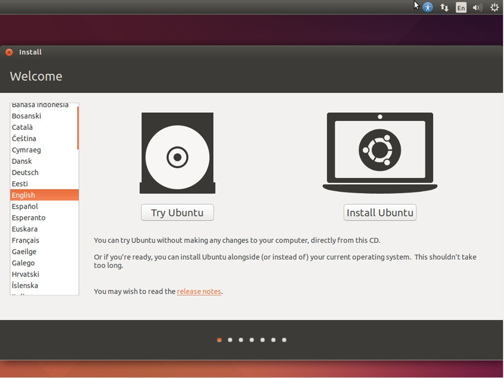
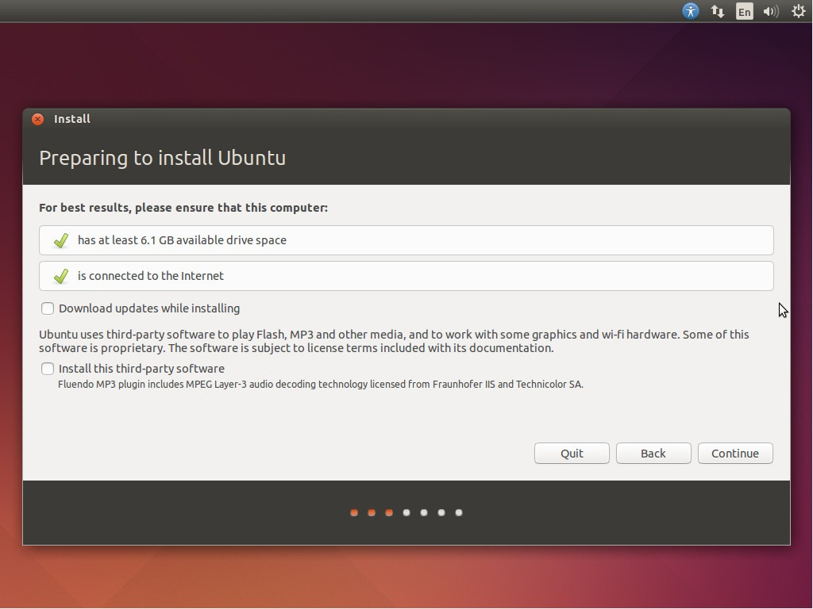
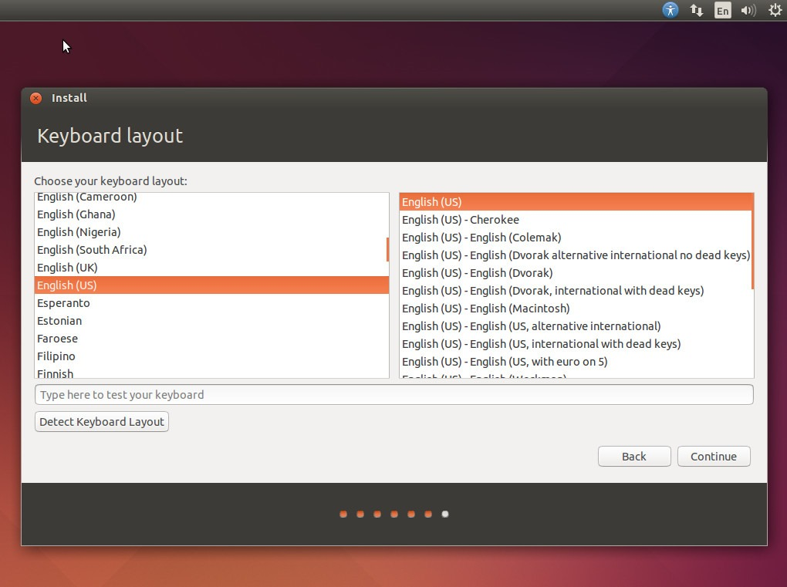
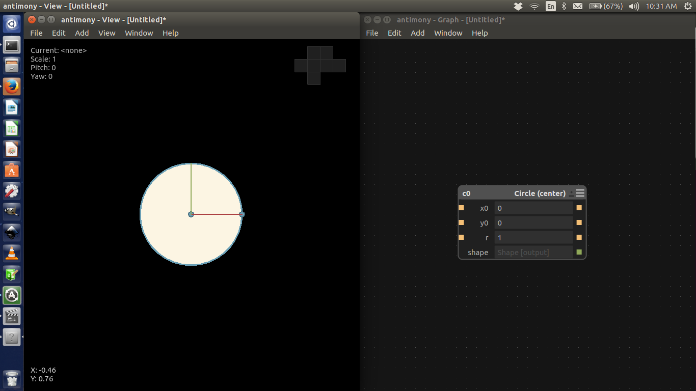
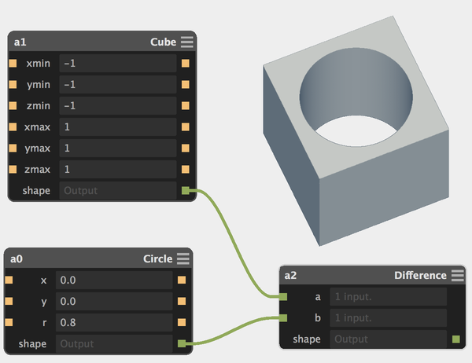
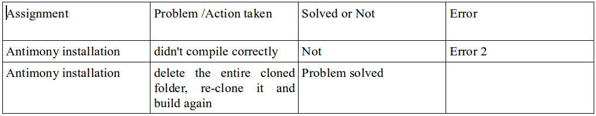
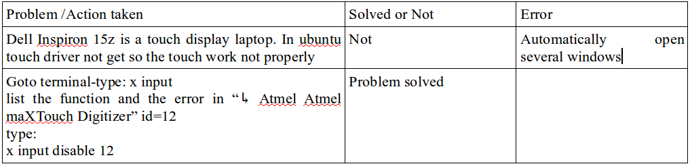
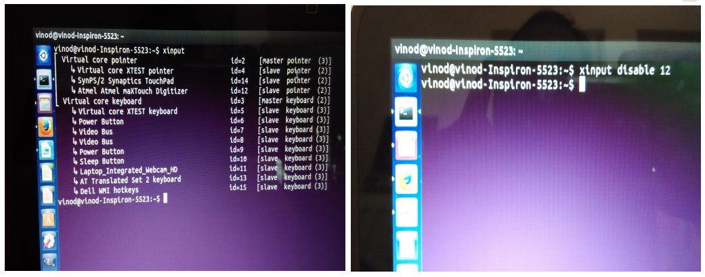

Week 1
Introduction
The trainer for the Pre Fab is Mr Francisco Sanchezz
profile: Francisco Sanchez, 42, Civil Engineer with specialty in structural engineering and tall buildings. He also LEED Accredited Professional in Building Design and Construction by the USGBC. He was graduated in Fab Academy in 2013, founded the The Fabulous Beach Lab, a fab lab in Sitges (a small town near Barcelona) and since then he run the Fab Academy the program as instructor.
Mr Francisco Sanchezz take the presentations for the Pre FAB Academy. The presentation contains Digital Fabrication introduction, Fab labs and Fab lab Network
analog and digital signal
analog communication to digital communication ~ 1945
analog computation to digital computation ~ 1955
analog fabrication to digital fabrication ~ 2005
The Fab Foundation was formed February 9, 2009 to facilitate and support the growth of the international fab lab network through the development of regional Fab Foundations and organizations. The Fab Foundation is a US non-profit organization that emerged from MIT Center for Bits & Atoms Fab Lab Program. Fab Foundation mission is to provide access to the tools, the knowledge and the financial means to educate, innovate and invent using technology and digital fabrication to allow anyone to make anything
Sherry Lassiter - President, Neil Gershenfeld - Chairman of the Board, Stuart Gannes -Vice President, Simone Amber - Board Member & Chris Wilkinson - Board Member
The Fab Lab Network is an open, creative community of fabricators, artists, scientists, engineers, educators, students, amateurs, professionals, ages 5 to 75+, located in more than 40 countries in approximately 200 Fab Labs. From community based labs to advanced research centers, Fab Labs share the goal of democratizing access to the tools for technical invention. This community is simultaneously a manufacturing network, a distributed technical education campus, and a distributed research laboratory working to digitize fabrication, inventing the next generation of manufacturing and personal fabrication. http://www.fabfoundation.org
Mr Francisco Sanchezz showing and explain the all machine's and equipment's in the FAB Lab KERALA. The equipment's and machine's are listed bellow :
1. Shopbot PRSAlpha-96-48-6 Full Size PRSalpha CNC
2. Weller WES51 Analog Soldering Station
3. Ultimaker 2
4. Modela miller
5. Laser cutter
6. Digital Storage Oscilloscope
7. 3D printer. Dimensions sst 12000es
8. Scroll Saw
9. Band Saw
10. Molding and Casting
11. Electronics workbench
The FAB Academy course is a six month duration course. When we attend the FAB Academy course we must completed the Pre FAB Academy course (4 weeks). He explained why we need a Prefab training and how it will help us while we take the Fab Academy course. Then Francisco first collect all students name & mail id and shared some documents in a folder via. google drive which we will use to store and share files. Then we had a discussion on what we will be doing in the first week in detail
Second day we started with how to prepare the documentation and debugging table. Francisco teached us to keep a separate note book for writing down all the points during the course of the workshop. It is insisted to use the same notebook if you are attending the FAB academy course
Exp: we work in laser cutter, we need to note the bellow things
1.Date
2.Machine used
3.Material (thickness, type, colo...)
4.Settings (speeds, feed rates...)
5.Results (what worked, what didn't)
6.Debugging
Assignment:
The documentation shall be done in such a way that in case of doing a machine operation Name of the work Name of the machine Spec Settings Measurements (if any) Having never used ubuntu before, when Francisco asked to install Ubuntu 14.4. My Laptop Specs: Model: Dell Inspiron 15z-5523 Ultrabook Processor: 3rd Gen Intel Core i7 processors and the performance-enhancing features of Windows 10 with 8 GB RAM. First am partition my hard disk, but its note it's not booting their. Francisco sad to me if your interested in the course you un install the windows and install the Ubuntu 14.04. I accept the advice and I formated and installing the Ubuntu 14.04. The important thing before installation of Ubuntu is to create partitions in the available hard disk space by opening Manage, Computer Management, Storage. My friend give a bootable pendrive with Ubuntu 14.04 OS.
Boot from the pendrive. plugging in the boot able pendrive with Ubuntu 14.04 restart the computer and choose to boot from the pendrive. I have to change my boot preferences by hitting the Setup (F12) key while my computer is restarting.
Navigate through the top menu bar and you can find Legacy Boot [Enable] [Disable] Press F10 and Save. Ubuntu opens up next objective is to create three partitions namely /, home and swap area. For / Memory : Primary Ext 24 Allocate space as per your choice (50 GB) For /home Memory: logical Ext 24 Space allocated: 100 GB For swap area Space allocated: 16 GB Install Ubuntu

Press the "Install Ubuntu" button.
click the "Continue" button.


select our keyboard layout "English (US)"
Once we have completed installing Ubuntu, update the OS by opening the Terminal (Ctrl+alt+t). apt-get update If this shows permission denied use the below command sudo apt-get update (sudo means super user do) Once you have successfully updated Ubuntu, the next step is to download the dependencies and for which log on to kokompe.cba.mit.edu Once that is done next step is to download the fab modules Unzip the fab module,open the folder, right click select open terminal here. If you couldnt find it you need to install nautilus (file manager) sudo apt-get install nautilus Install fab modules Then downlaod kokopelli.retro.zip (shared by francisco) extract make fab cd bin ./kokopelli Download antimony Search github antimony Open Intall Qt5.5 (an application, where in you can design software by placing buttons and corresponding codes are generated simultaneously) Install the following Clone antimony (for getting the antimony updated automatically) ~/Qt5.5.1/5.5/gcc_64/bin/qmake ../sb.pro, sudo make -j8, ./app/antimony - Antimony is not getting installed in my computer . Antimony installation time I faced some Problem - It didn't compile correctly for the first time. I ask my friend, he toled me "to delete the entire cloned folder, re-clone it and build again. After next time it got installe". Next time I installed the antimony getting installed successfully.
Antimony Software instalation tips are shown bellow:


Antimony is a computer-aided design (CAD) tool from a parallel universe in which CAD software evolved from Lisp machines rather than drafting tables.
Antimony is built on three mostly-orthogonal axes:
.A framework for tracking information flow through directed acyclic graphs
.A geometry engine for doing CSG
.A standard library of shapes and transforms

Solid modeling in Antimony is done by connecting nodes in a graph
Installed the list of software bellow:
1. inkscape
2. openscad
3. gimp
4. cura
5. arduino IDE (not the ubuntu software center version)
6. attiny addon for arduino IDE
7. processing
8. qcad
9. git
10. eagle
11. kicad
12. wine
13. partworks in wine
14. Text editor of your choice

Day 3
(21.10.2015)
Creating accounts for pre fab academy course.
Fablabs.io account - already had one
git.fabcloud.io account - created a new one
Google account - already had one
Youtube and/or Vimeo account - had youtube account , created a new vimeo account
Github account - created a new one
Dropbox account - created a new one
Sketchfab.com account - created a new one
Operation:
create new folder in our desktop - file name: "git" open the folder and right click the mouse

select the open in terminal
Type:
"git clone.https://github.com/vkbg/vkbg.github.io" - Enter
"ls" - Enter
"cd vkbg.github.io" - Enter
"nano index.html" - Enter

Then added it to github repo. Did my initial commit and then Pushed everything.
Type:
git init - Enter
git confi__global u - Enter
git add index.html - Enter
git commit -m”first commit” - Enter
pushed to cloud
Type:
git push -u origin master - Enter
Problems occurred:


Day 4
(22.10.2015)
We started with Francisco educating us Time management - Supply vs Demand-based time, serial vs parallel
development, Spiral development, bottom-up vs top-down debugging (solve the problem or the cause)
Afternoon FAB Lab Trivandrum, Keep it clean and take the inventory, prepare the inventory list. my Cleaning job aria - Electronics workbench and consumables